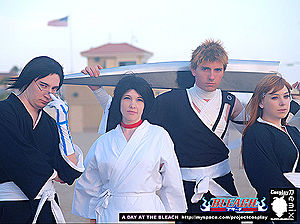

Grunge
 De: La Frikipedia, la enciclopedia extremadamente seria.
De: La Frikipedia, la enciclopedia extremadamente seria.
| De la serie tribus urbanas del mundo:
|
| Grunge
|
Ejemplo de la tribu

|
| Kurt en un ambiente de gravedad cero
|
|
| Hábitat
|
Departamentos y cuarto vagamente aseados
|
| Inteligencia
|
Depende de la ocasión, si le conviene puede ser más mordaz que un filosoraptor y si se la suda... ¿Qué es pensar?
|
| Frase favorita
|
"vive de tus padres hasta que puedas vivir de tus hijos" "Peace,Love and Empathy "
|
| ¿Peligroso?
|
Ni mucho ni demasiado poco, Lo normal, promedio, no importa...como todo en su vida
|
| Obsesión
|
tener un grupo y ser famoso pero jamas feliz
|
| Notas
|
Aunque Kurt Cobain decía dudar de su sexualidad, dejaba en claro que lo decía para molestar a todos los homofóbicos que lo escuchaban
|
«Si alguien cortó un bonito árbol para hacer una guitarra que sepa que la estrellaré en un amplificador en mi próximo concierto»
~ Kurt Cobain
«Es sucio, es inmundo, es... un paraíso»
~ Jay Adams
Los grunge (rockerus sapiens noventus) también conocidios como crunch, crunchie (crunchies en plural) son seres que descienden del rockero (rockerus rockanrolensis).
Primos de los jebis, hijos de los rockeros y nietos de los hippies, además de Nirvana,Pearl Jam y Alice in Chains pueden escuchar rock clásico, un poco de metal (thrash, power, etc mientras no cale en su ser crunchie), algo de hardcore punk y, por qué no, un poco de jebi (se puede agregar KISS, AC/DC, un poco de Red Hot Chilli Peppers y un poco de Iron Maiden, si deseas.
Se basa en unos cuantos grupos depresivos de Seattle(el sueño de todo grunge es vivir ahí) que empezaron a hacer rock alternativo con letras que hablaban de el desprecio por la vida, desprecio por la sociedad, desprecio por las relaciones, desprecio por el gobierno... en fín, desprecio y disconformidad. De ahí destacaron grupos como Nirvana, Pearl Jam, Soundgarden, Mother Love Bone, Alice In Chains, Mudhoney, etc. Unas de las frases que incluyeron en el libro Generación X (generación del grunge) fue: "Vive de tus padres hasta que puedas vivir de tus hijos", era como: "Es sucio, es inmundo, es... un paraíso". Vaqueros rotos, camisetas de franela; era todo un caos que volvía locos a los políticos e hiciera que las madres de aquellos chavales no se sintieran orgullosas. Muchas de sus letras trataban de angustia, desesperanza, desinterés y hastío por el sistema; también hay letras de amor( aunque no lo crean), amistad, y odio hacia la vida sin sentido, siempre buscando llegar al Nirvana. Aunque muchos eran( o son) depresivos, también eran locos y disfrutaban de la cerveza, la mota(o porros) heroína o lsd.
Como vestían
- Pantalones de mezclilla (ajustados o anchos, no normales; y rotos en las rodillas o por completo).
- La camisa de Nirvana, Soundgarden, Pearl Jam, u otra buena banda Grunge... Es parte de tu piel, junto con la camisa a cuadros de manga larga o corta encima de ella.
- Zapatillas clásicas, anchas o de lona comodas (Allstar o Converse) o botas Dr. Martens
- El pelo en definitiva, como los de las puertas de las iglesias (el cura no, el despeinado) pero a lo rockero.
- También utilizaban pantalones cortos como los que solía utilizar Eddie Vedder en los 90's.
Como se comportan
- Sin estrés ante todo, normalmente pasaban de los que más odiaban (los canis y los pijos)combinaban la rebeldia del punk con el rechazo al materialismo y los porros de los hippies. Un grunge jamás baila, lo que se hace es Headbanging o, como mucho, slam, pero eso es más rock y no se complicaban la vida en los acordes de las canciones ni en la letra , pues para ellos es una forma de desahogarse y hacer un poco de ruido. Existe el extraño mito
creado por un Wombat mutante de que los emos(también conocidos como maricas) descienden de alguna manera de los grungers. Es importante destacar que esto NO ES MÁS QUE UNA MENTIRA WOMBICA.
- Ojos medio cerrados, actividad MUY pasiva y sentido del humor negro pero original, hay que dar miedo pero molar, coño.
- Tocan la guitarra y mínimo se saben smells like teens spirit & i love rock & roll,
o son tan vagos que no aprenden a tocar ningún instrumento o se dedican a "cantar"
- Tu estado de ánimo varia según la canción que escuchas.
- Tu melena brillante con la que atraeras chicas
y se rendiran ante ti los pelados.
- Convivie con un rockero, metalero( a excepción de un blacker), jebi o punk.
Vocabulario
Un Grunge tiene muchas facetas
- ¡Brutal!: fascinante.
- Flipao: tonto.
- Mierda: raro.
- Anda a mirar al valle: vete.
- Asco: feo.
- Potente: rápido.
- tarro :cabeza.
- con tu hermana: eso si que no.
 Tras su lanzamiento
Bleach se volvió una gran influencia para los seguidores del Grunge
Grupos de música grunge
- Nirvana
- Mother Love Bone
- Screaming Trees
- Skin Yard
- Mudhoney
- Pearl Jam
- Tad
- Hole
- Soundgarden
- Alice in Chains
- Melvins
- Green River ( se debate si esta fue la primera banda de dicho género musical)
- Stone Temple Pilots
- Green River
-
Cepillin
Qué ES de ellos
Pues la verdad, el sistema los cambió en cuanto Kurt Cobain murió, el grunge nació y murió con él llevándose toda una generación y un estilo musical y social. Actulmente el grunge perdura entre uno que otro rockero que ama a Kurt Cobain y a Eddie Vedder.
Lo más importante que todo grunger debe saber
EL mundo llego a burlarse de ellos con la muerte de Cobain, inclusive llamandolos por el desgraciado apodo padres de los emos. Es de conocimiento crunchie que Cobain fue ASESINADO, la mayor parte de las pruebas circunstanciales apuntan a la autoría intelectual del crimen por parte de una bruja loca de pelo con cloro que todo grunger odia por esto. Los demás grandes personajes que murieron lo hicieron debido a ser tan hombres que se metieron tanta heroína que su cuerpo explotó sufrieron sobredosis y los llevó a la gloria.
Aliados y Enemigos
Aunque los Grunge son hombres... muy depresivos hombres, pero al final hombres, y solo reinaron (si asi se le puede decir) en los 90's, se hicieron de algunos amigos y algunos otros enemigos.
Aliados
- Los guays
- Los rockeros. Los Rockeros son sus padres y compañeros de borracheras y cacerías de pijosy emos, y su música no es mala del todo. Así pues, la alianza es beneficiosa.
- Los jebis (o metaleros normales): Son compañeros de borracheras, de cacerías de pijos y emos. Así pues, esta alianza tambien es beneficiosa.
- Los góticos: Aunque pueden llegar a ser un poco pesados como ellos, cuando están callados en un rincón no molestan a nadie, comparten muchas ideas depresivasy de muerte, asi la amistad es más interesante.
- Los frikis: Es la alianza natural. Unos ponen la inteligencia, y los otros la fuerza ejecutora. Juntos son imparables, pues. También hay que tener en cuenta que muchos frikis tienen tendencias Rockeras y otros depresivas, lo que hace que ambos grupos estén cercanos el uno al otro. Además de que cada vez hay más Frikis deprimidos.
- Los punks: Más que amigos, son neutros. El punk tiene la energia del Grunge, en algunas ocasiones se les ve juntos; especilamente, para cazar emos.
- Metaleros
digievolucionados( entiéndase thrashers, death metaleros y demás primos hermanos): Aunque los metaleros en general creen en los mitos wombicos del grunge, igual pueden llegar a ser buenos compañeros, especialmente en la caza con agente naranja y ametralladoras de emos. También son grandes compañeros de borracheras.
- Los hippies: Sabios por excelencia, rolaban Buenos porros a sus descendientes a la vez que plantas alucinógenas, inconformes con el sistema, excelentes maestros en las drogas.
Enemigos
- Los canis: Son los dos extremos; completamente contrarios aunque los dos intentan ser guays. Es por eso que surgen las rivalidades, pero son iniciadas por los canis, que siempre han sido más pendencieros y se dedican a molestar. Bueno solo es de poner en el equipo de sonido algo de Nirvana, y Kurt hara el resto del trabajo, se iran corriendo, tapandose los oidos.
- Los pijos: No es culpa de nadie si tienen una diana en la boca, pero ya que la tienen, habrá que eliminarlos y dejar que el mundo descanse de escoria.
- Los emos: Los dos hablan de depresion... Pero los Grunge son hombres, agitan sus melenas y van al Mosh en raras ocasisones, son parecidos en la apatia por la vida pero los emos son gays... aun asi "se considera que los Grunge fueron los padres de los Emos"... que ya fue aclarado no es más que un mito. Los emos nacieron en los 80's
pero a nadie le importó y los Grungers en los 90's, además la música y letras de ambos géneros no se parecen, y aún menos los grungers y los emos. Es por estas y demás razones que los grungers se deleitan cazando emos cada vez que pueden, y los torturan hasta morir( osea les dan una navaja para que se corten las venas al final).
- Los raperos: Se dedican a hacer ruidos extraños con la boca, y piensan que el Grunge solo es para maricas. ¡¡Que agarren una buena guitarra, que se van a enterar de lo que es la música auténtica!!
- Los regaytoneros: Cualquier persona pensante es enemigo de estos, solo se requiere sentido común.
- Los floggers: El buen grunge odia lo superficial.
- Los fresas: A las fresas les gustan los grunges, los ven muy monos , preo ellos las odian a muerte.
- Los glamers: Sus mayores detractores, nunca perdonarán a los grunges por haberles hundido.
Pues no tenian muchos enemigos porque pasaban de ellos. Pero, si con los pijos se llevaban muy mal, odiaban a sus padres por que les hacian que se vistieran muy pijos y por eso se rompían la ropa y también odiaban a los canis por que siempre les pegaban al verlos tan delgados y débiles.
Tiene también como acérrimos enemigos a todas las bandas de glam metal que a finales de los ochentas empezaron a perder popularidad debido a su música.
Si te mola (¡¡Fascina!!) El Grunge
Enlaces externos
| Tribus Urbanas
|
 Universales Universales
 Españolas Españolas
 Argentinas Argentinas
 Chilenas Chilenas
 Colombianas Colombianas
 Mexicanas Mexicanas
 Peruanas Peruanas
 Venezolanas Venezolanas
|
Autor(es):
- Krusher
- Doctor grijander
- Aque
- Tsushinoko
- Roms
- Azulejos
- Lucholuis123
- Ragdoll grunge
- ++grunge++
- Lazaaro
Frikipedia 2005-2016, Licencia
GFDL 1.2 - Extraído por FrikiLeaks
{kind=link}